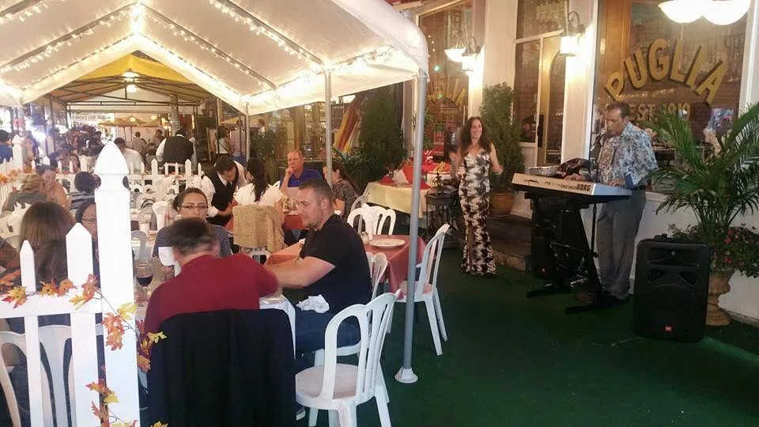
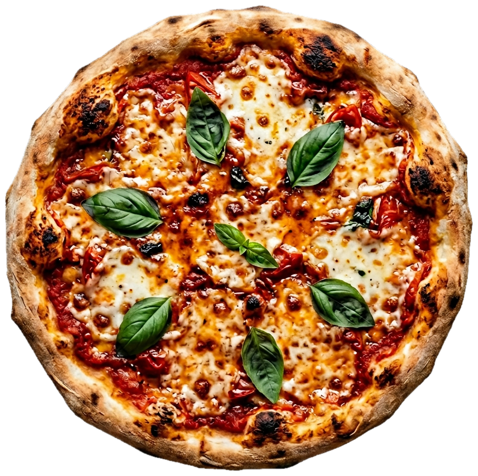
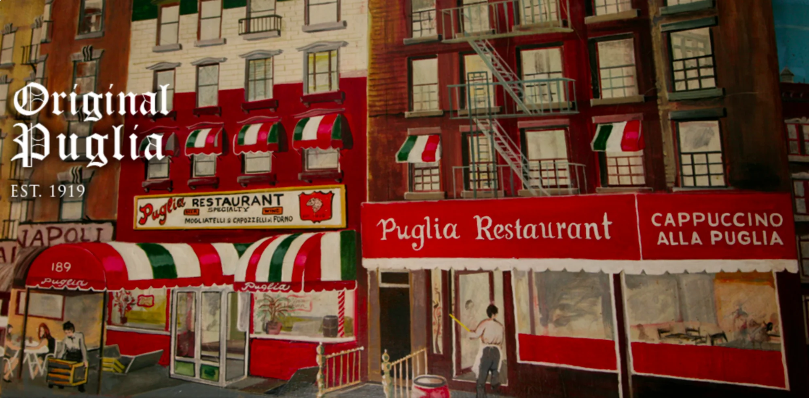
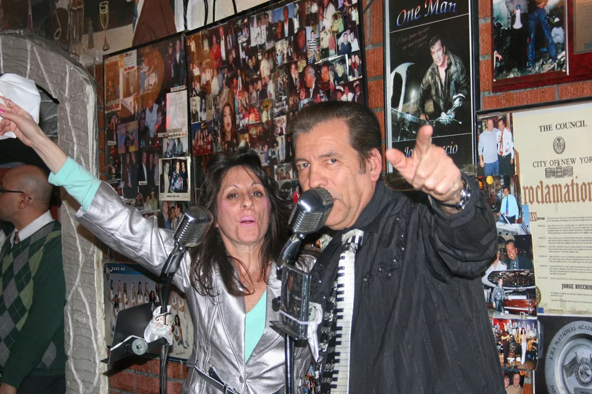
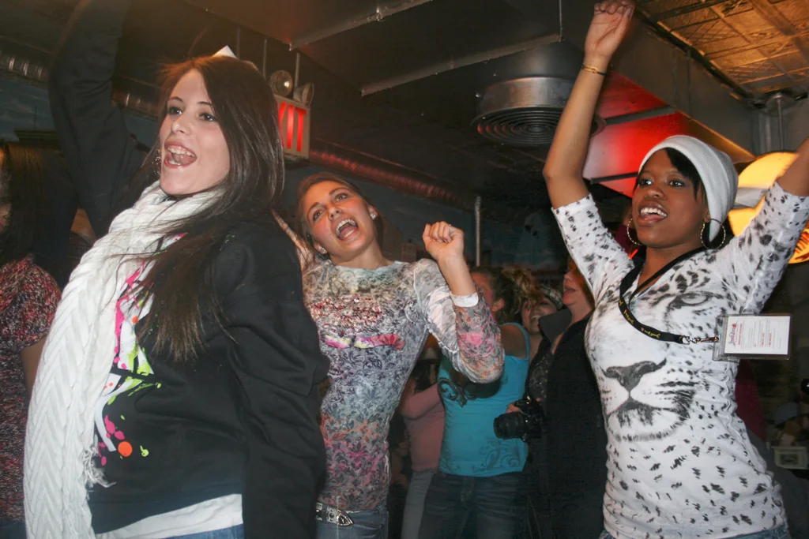

Pizza & rolls
Browse the pizza varieties and rolls listed on Puglia’s public menu.
Browse pizza menu
Little Italy · 189 Hester Street
A family story · New York
Puglia says its family story dates to 1919. Browse the posted Italian-American menu and ask whether live music is scheduled.

Plan a visit · inquiry only
This form does not check availability or book a date. Puglia asks guests to call or message directly; wait for the restaurant to confirm.

A name from the south
Puglia’s own story begins with Gregorio Garofalo, who came to New York in 1919. The restaurant takes its name from the southern Italian region he left behind.
The family says the tradition continues at the original Hester Street address. Today, the room brings together old-school Italian-American cooking, generous tables and the kind of evening that can linger a little longer.
History shared here follows the restaurant’s own account; it has not been independently verified.
Read Puglia’s storyParties & celebrations
Puglia says two dining rooms are available for parties, big and small. Ask the team about group menus, room arrangements and current terms before you plan.
Two dining rooms
Ask about the right fit
Group menus
Current details by phone
Little Italy address
189 Hester Street
Online party pages show different package prices and terms; confirm current details directly. A call or message is an inquiry, not a confirmed booking.

The room has a rhythm
Puglia’s homepage advertises live music on open nights. The lineup and schedule can vary, so check with the restaurant before making a night of it.
Explore Puglia’s entertainment page
Food and moments pictured in the restaurant’s public gallery. Tap a photo to take a closer look.
Gallery images are from Puglia’s existing public website; current menu presentation and image permissions should be reconfirmed before launch.
Your table is on Hester
Puglia notes that hours and days can sometimes vary. Closing times and Monday/Tuesday hours aren’t listed on the current homepage; call before visiting.
Phone(212) 966-6006
ReservationsPhone or direct message
General inquiriesEmail Puglia
Reservation requests should not be emailed; Puglia asks guests to call or message directly.
Have a date in mind?